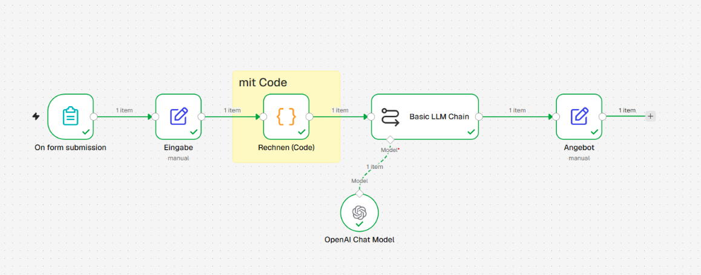
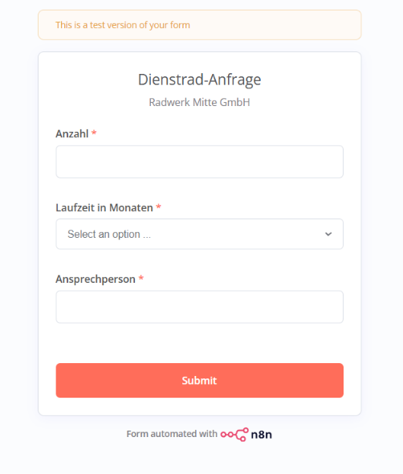
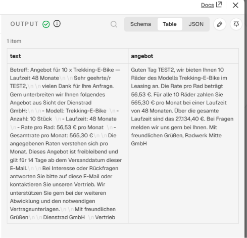

AUTOMATION WITH N8N — WORK SAMPLE 02 AUTOMATISIERUNG MIT N8N — ARBEITSPROBE 02
From form to finished leasing offer Vom Formular zum fertigen Leasingangebot
An n8n workflow takes in a company-bike leasing request, calculates the rates in code, and lets an LLM turn them into a customer-ready offer. A human reviews it before it goes out. Ein n8n-Workflow nimmt eine Dienstrad-Anfrage entgegen, berechnet die Leasingraten per Code und lässt ein LLM daraus ein kundenfertiges Angebot formulieren. Ein Mensch prüft, bevor es rausgeht.
THE CORE PRINCIPLE DAS KERNPRINZIP
The code does the math.Rechnen macht der Code.
The LLM does the writing.Formulieren macht das LLM.
01 — STARTING POINT 01 — AUSGANGSLAGE
Every offer, by hand Jedes Angebot von Hand
Demo scenario: a company-bike provider receives leasing requests from business customers — with quantity, term and a contact person. Until now, every rate was calculated by hand and every offer written individually. Demo-Szenario: Ein Dienstrad-Anbieter erhält Leasinganfragen von Firmenkunden – mit Stückzahl, Laufzeit und Ansprechperson. Bisher wurde jede Rate manuell gerechnet und jedes Angebot einzeln geschrieben.
That costs time, and mistakes creep in, especially in the calculations. The goal: an automated process that delivers correct numbers, phrases them in a friendly way — and still stays controllable. Das kostet Zeit, und gerade bei Rechenwegen schleichen sich Fehler ein. Ziel: ein automatisierter Ablauf, der korrekte Zahlen liefert, freundlich formuliert – und trotzdem kontrollierbar bleibt.
02 — THE WORKFLOW 02 — DER WORKFLOW
Five steps in n8n Fünf Schritte in n8n
FormFormular
Customer enters quantity, term and contact person.Kunde gibt Anzahl, Laufzeit und Ansprechperson ein.
InputEingabe
Fields are validated and brought into a clean format.Felder werden geprüft und in ein sauberes Format gebracht.
CalculationBerechnung
JavaScript calculates the rate, total rate and total amount — deterministically.JavaScript rechnet Rate, Gesamtrate und Gesamtsumme – deterministisch.
LLM textLLM-Text
A Basic LLM Chain turns the finished numbers into an offer.Basic LLM Chain formuliert aus den fertigen Zahlen ein Angebot.
Review offerAngebot prüfen
Manual step: a human checks it and approves it.Manueller Schritt: Ein Mensch kontrolliert und gibt frei.
03 — INPUT & OUTPUT 03 — INPUT & OUTPUT
What goes in, what comes out Was rein geht, was raus kommt
INPUT · FORMINPUT · FORMULAR
Company-bike requestDienstrad-Anfrage
Radwerk Mitte GmbH
Recreated for illustration — not functional Nachbau zur Veranschaulichung – nicht funktionsfähig
STEP 03 · CODE NODESCHRITT 03 · CODE-NODE
The calculationDie Rechnung
The LLM receives these values ready-made. It doesn't calculate anything itself. Diese Werte bekommt das LLM fertig übergeben. Es rechnet nichts selbst.
OUTPUT · WRITTEN BY THE LLMOUTPUT · VOM LLM FORMULIERT
Subject:Betreff: Offer for 10 × Trekking E-Bike — 48-month term Angebot für 10 × Trekking-E-Bike – Laufzeit 48 Monate
Dear TEST2,Sehr geehrte/r TEST2,
Thank you for your inquiry. We are pleased to offer you the following:vielen Dank für Ihre Anfrage. Gern unterbreiten wir Ihnen folgendes Angebot:
This offer is non-binding and valid for 14 days from the date of dispatch. Please don't hesitate to contact us with any questions.Dieses Angebot ist freibleibend und gilt 14 Tage ab Versanddatum. Bei Rückfragen sind wir gern für Sie da.
Kind regards,Mit freundlichen Grüßen,
Dienstrad GmbH
04 — LEARNINGS 04 — LEARNINGS
What I learned Was ich dabei gelernt habe
Never let the LLM do the mathZahlen nie vom LLM rechnen lassen
Language models are good at phrasing but unreliable at arithmetic. That's why the calculation lives in a code step — traceable and the same every time.Sprachmodelle formulieren gut, rechnen aber unzuverlässig. Die Berechnung liegt deshalb in einem Code-Schritt – nachvollziehbar und jedes Mal gleich.
Hand over facts, don't let it guessFakten übergeben, nicht erraten lassen
Whatever the model isn't given, it invents. The company name has to go into the prompt as a fixed variable.Was das Modell nicht bekommt, erfindet es. Der Firmenname muss als feste Variable in den Prompt.
Use only this information.Nutze nur diese Angaben.
The human stays in the loopDer Mensch bleibt im Loop
This exact mistake shows why the manual review step before sending stays in place. Automation speeds things up — responsibility stays with the person.Genau dieser Fehler zeigt, warum der manuelle Prüfschritt vor dem Versand bleibt. Automatisierung beschleunigt – Verantwortung bleibt beim Menschen.
Define the output format earlyAusgabeformat früh festlegen
The raw text came back with control characters instead of paragraphs. Specifying the target format (email, HTML, plain text) up front saves rework.Der Rohtext kam mit Steuerzeichen statt Absätzen. Wer das Zielformat (E-Mail, HTML, Text) vorgibt, spart Nacharbeit.
05 — TRANSFERABLE TO 05 — ÜBERTRAGBAR AUF
Anywhere fixed rules meet individual writing Überall, wo feste Regeln auf individuelle Texte treffen
View original n8n screenshots Original-Screenshots aus n8n ansehen



A similar process at your company? Ähnlicher Prozess bei dir?
Let's look together at where AI automation makes sense for you — and where the human should stay. Lass uns gemeinsam schauen, wo Automatisierung mit KI bei dir sinnvoll ist – und wo der Mensch bleiben sollte.